動じない漢 梅吉 [梅吉]
先週末消防施設点検がありました。
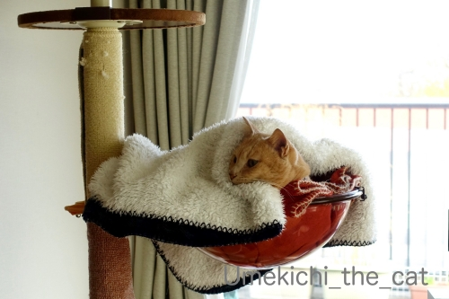
ご飯を食べて家の中を爆走したあとの寝込みを襲われた梅吉さんw
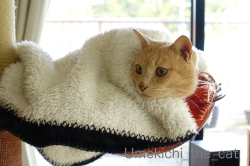
お兄さんの姿をガン見。
やっぱり靴下の匂い嗅ぎに行くのかしらー！！
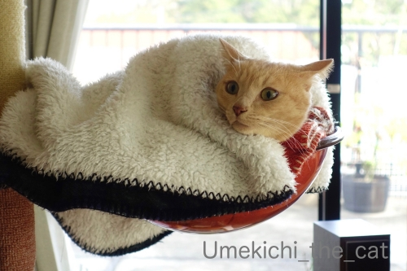
ガス感知器の「火事です、火事です」が聞こえるとちょっとびっくり顔。
（8秒 警報音がなります！）
が逃げる気配全くなしwww
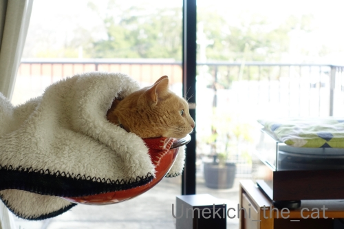
ベランダにある避難ばしごを点検に行くお兄さんを目で追います。
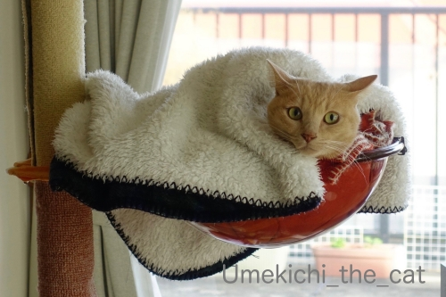
お兄さん帰っちゃいましたよ・・・
と まさか、まさか、消防施設点検をクリアボールに入ったままやり過ごしたのでした！
家の中に入ってくる人の靴下の匂いチェックは欠かさず
しかも足に絡まってガブ蹴りまでするのがいつもの梅吉なんですが・・・
多少物足りなくはありましたがおかーさんは楽でしたよ(⌒-⌒;
 ↑ガブッと一押し↑
↑ガブッと一押し↑
転勤で大阪にやってきて早８年。
８年前からずーーーっと気になっていた近所のイタリアンにようやく行ってきました。
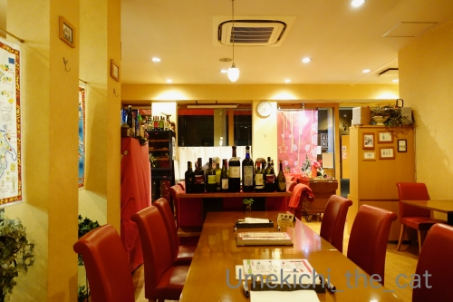
外観から想像するよりも中は広かったです。
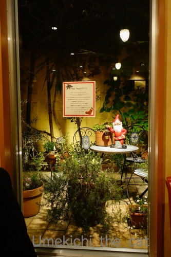
小さいけど中庭があって圧迫感がないのが良い感じ♪
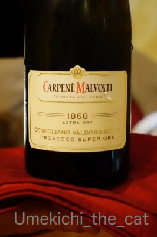
乾杯はプロセッコをハーフで。
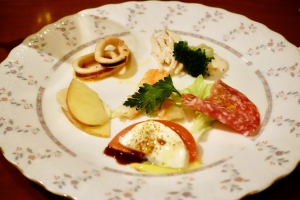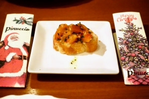
アンティパストの盛り合わせ。ブルスケッタ。
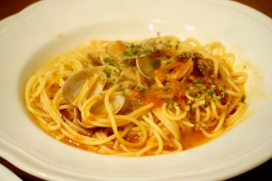
プリモにボンゴレ・ロッソとマルゲリータをそれぞれ。
もちろんシェアしていただきました＾＾
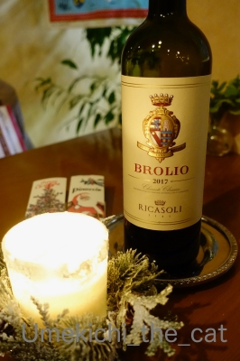
ピザとパスタをアテにワインを赤にチェンジ。
キャンティ・クラシコ フルボトルで。
そうそう！この前Bossさんのブログで見て
しばらくキャンティ飲んでないねーと頼みました。
私がワインを飲み始めた頃のキャンティって
お尻がずんぐりしたボトルで藁に巻かれてたんですが・・・
最近あのスタイルのキャンティを見なくなったなと調べてみたら
お店の陳列に場所を取る等の理由で今はあまり生産されていないようです。
あれはあれで趣があって好きだったのでちょっと寂しいです。
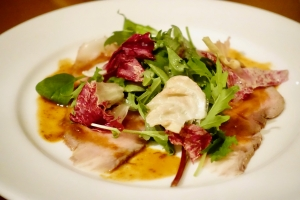
セコンドにローストポークと魚貝のなんちゃらw(忘れた）をそれぞれ。
席に着いたと同時にシェフがやってきて
「今日はローストポークがオススメです！！」と
熱く言われたのでお願いしたのですが・・・
後から来た常連さんが「今日ラムある？」「出来ますよ！」との会話。
あああ、ラムが食べたかったー。
次回は私もラムがあるか聞いてからオーダーしよう。
ちなみに私は鴨も好きです！！
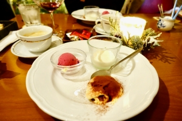
ドルチェはティラミス、パンナコッタ、ラズベリーのシャーベットでした。
コーヒーで締めて大満足！
胃の調子が悪いなんて言っててそんなに飲み食いしてって言わないでー(⌒-⌒;
ここのお店それぞれの量が少なめで今の私にはちょうど良かったです！
（ちゃんと翌日セーブしたし。）
常連さんは「◯◯を大盛りで！」とか「肉は３人前で！」とか
うどん屋か焼肉屋みたいなオーダーの仕方をしてましたwww
イタリアンらしからぬ気軽な感じが大阪の下町クオリティです (≧▽≦)
家から歩いて5分くらいのお店。良いお店でした＾＾
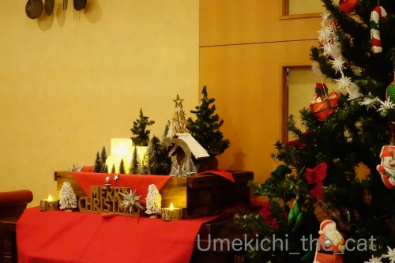
お店の雰囲気もサービスもとっても気持ちが良かったです。
また行こうっと♪
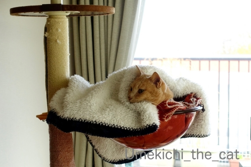
ご飯を食べて家の中を爆走したあとの寝込みを襲われた梅吉さんw
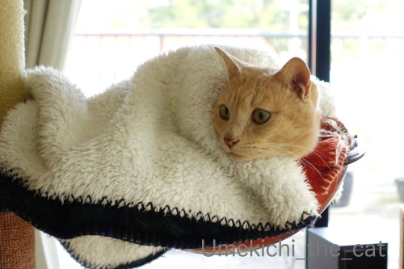
お兄さんの姿をガン見。
やっぱり靴下の匂い嗅ぎに行くのかしらー！！
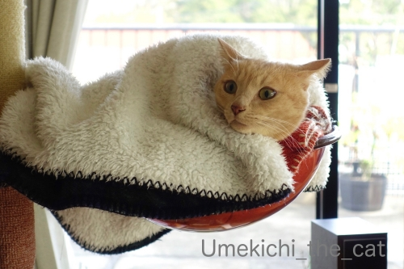
ガス感知器の「火事です、火事です」が聞こえるとちょっとびっくり顔。
（8秒 警報音がなります！）
が逃げる気配全くなしwww
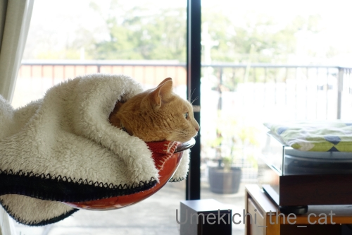
ベランダにある避難ばしごを点検に行くお兄さんを目で追います。
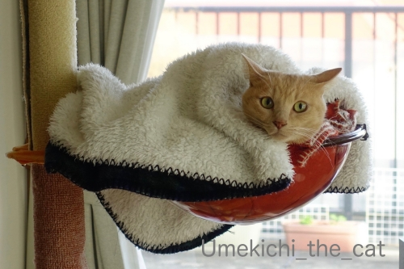
お兄さん帰っちゃいましたよ・・・
と まさか、まさか、消防施設点検をクリアボールに入ったままやり過ごしたのでした！
家の中に入ってくる人の靴下の匂いチェックは欠かさず
しかも足に絡まってガブ蹴りまでするのがいつもの梅吉なんですが・・・
多少物足りなくはありましたがおかーさんは楽でしたよ(⌒-⌒;
転勤で大阪にやってきて早８年。
８年前からずーーーっと気になっていた近所のイタリアンにようやく行ってきました。
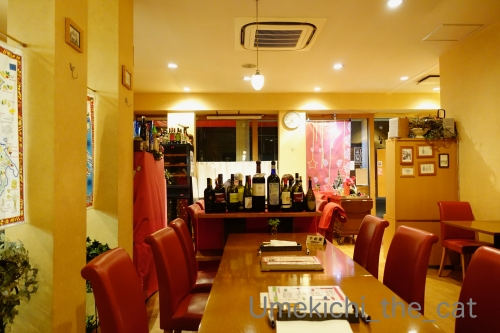
外観から想像するよりも中は広かったです。
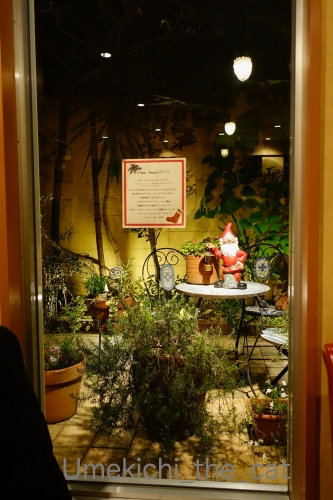
小さいけど中庭があって圧迫感がないのが良い感じ♪
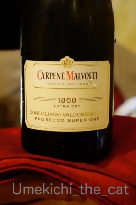
乾杯はプロセッコをハーフで。
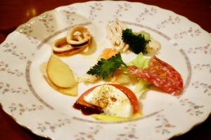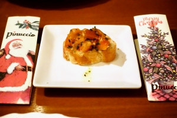
アンティパストの盛り合わせ。ブルスケッタ。
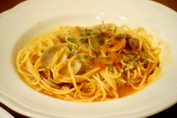
プリモにボンゴレ・ロッソとマルゲリータをそれぞれ。
もちろんシェアしていただきました＾＾
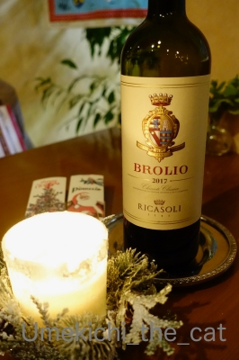
ピザとパスタをアテにワインを赤にチェンジ。
キャンティ・クラシコ フルボトルで。
そうそう！この前Bossさんのブログで見て
しばらくキャンティ飲んでないねーと頼みました。
私がワインを飲み始めた頃のキャンティって
お尻がずんぐりしたボトルで藁に巻かれてたんですが・・・
最近あのスタイルのキャンティを見なくなったなと調べてみたら
お店の陳列に場所を取る等の理由で今はあまり生産されていないようです。
あれはあれで趣があって好きだったのでちょっと寂しいです。
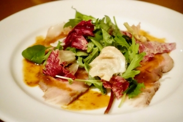
セコンドにローストポークと魚貝のなんちゃらw(忘れた）をそれぞれ。
席に着いたと同時にシェフがやってきて
「今日はローストポークがオススメです！！」と
熱く言われたのでお願いしたのですが・・・
後から来た常連さんが「今日ラムある？」「出来ますよ！」との会話。
あああ、ラムが食べたかったー。
次回は私もラムがあるか聞いてからオーダーしよう。
ちなみに私は鴨も好きです！！
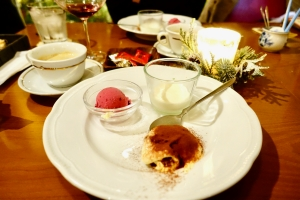
ドルチェはティラミス、パンナコッタ、ラズベリーのシャーベットでした。
コーヒーで締めて大満足！
胃の調子が悪いなんて言っててそんなに飲み食いしてって言わないでー(⌒-⌒;
ここのお店それぞれの量が少なめで今の私にはちょうど良かったです！
（ちゃんと翌日セーブしたし。）
常連さんは「◯◯を大盛りで！」とか「肉は３人前で！」とか
うどん屋か焼肉屋みたいなオーダーの仕方をしてましたwww
イタリアンらしからぬ気軽な感じが大阪の下町クオリティです (≧▽≦)
家から歩いて5分くらいのお店。良いお店でした＾＾
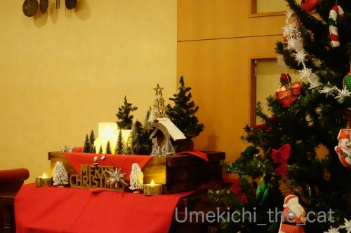
お店の雰囲気もサービスもとっても気持ちが良かったです。
また行こうっと♪

カフェオレ色の梅吉

梅吉 2023年8月10日 永眠


梅吉と出会った譲渡会

犬猫の理由なき殺処分ゼロ
妄想広告
UMEKICHI 光

爆発的に早い！
時々攻撃的！
Thanks to Mr.Boss365
爆発的に早い！
時々攻撃的！
Thanks to Mr.Boss365

梅吉さん、もしかして固まったまま！（笑）
慌てて飛び出したりしなくて良かったです。
ラムとか鴨とか私も大好きです。
美味しそうな良いお店。
近所でも通り過ぎるだけってお店ありますね（笑）
by kiki (2019-12-26 00:20)
梅吉さん肝が座っています。大物です。
ゴンなんかこの動画を再生した音だけで緊張しましたよ。気が小さいんです。
by zombiekong (2019-12-26 00:43)
予想外の梅吉さんの行動！
もしかしたら息をひそめてこれでも隠れていたのかも(笑)
最後は「あいつ誰や」と言ってるみたいです。
イタリアのお店はこれからちょくちょく登場してくる予感～
鴨好きなので次回はそれでお願いします(^^♪
by yamatonosuke (2019-12-26 01:15)
さすが梅吉さん、消防点検にも動ぜずだなんて「漢」ですねぇ=(^.^)=
うちはピンポ〜ンがなった瞬間にガールズはパニクって
自分だけの隠れ場所にダッシュだし、ボーイズは何々？って
お出迎えしようとするのを抑えないとダメだし・・・忙しないです(*_*)
梅吉さんのように大人の余裕で過ごしてくれたら
どんなに楽かと羨ましく思います〜(⌒-⌒; )
by ニッキー (2019-12-26 07:10)
おお！動じない姿、立派です！
ただ単に匂い嗅ぎに行くのが邪魔くさかった？(^_^;)
気軽に大盛りを頼める雰囲気のイタリアン、いいなぁ。
近くにあったら絶対私も常連さんになってたはず！！
by よーちゃん (2019-12-26 07:42)
おぉ～漢、梅吉さん♪
カッコイーです(#^.^#)
動じない・・・ってぬくぬくから
離れられなかったのかな(;^_^A
by きぃ (2019-12-26 08:17)
梅吉さんすご～い！
まさに泰然自若、ウチの小心者に爪の垢を煎じて飲ませたい(≧▽≦)
お腹いっぱいの寝入り端に虚をつかれた～というお顔がキュート♪
ベランダへ向けられた視線は、あんたら寒いのにウロウロ大変やな、と言ってるみたいです^^;
ぬくぬくあったかベッドから見物が正解かもしれませんね。
酔っぱらっても歩いて帰れる距離にステキなお店、これ最高！！
キャンティ、かつて「イタ飯」大ブームの折によく飲みました。
確かに藁みたいな腹巻してました(#^^#)
by ゆきち (2019-12-26 12:19)
梅吉さん、消防の点検にも馴れたみたいですね！
ベッドでヌクヌクのほうが大事ですね。
by ma2ma2 (2019-12-26 13:19)
ちゃんと、ちぃさんが注意書きを書いていてくれたのに大失敗！
動画の警報音にうみがびっくりして飛び起きて唸って、あおとケンカが始まった！^^;
現在、ケンカはおさまったけど、
２ニャンそろって部屋の中をパトロール中です
by リュカ (2019-12-26 13:48)
さすが！梅吉くん警報音にも動じないなんて！
リュカさんのお家はケンカからのパトロール(≧▽≦)
家は警報音でタラが逃げて行った～。
「大丈夫だよ」「誰も来ないから」って言っても戻ってこないｗ
廊下でしょんぼりしてる。
イタリアンおいしそう♪魚介のなんちゃら食べたいよ(*^-^*)
お店の雰囲気もとってもいいね。
by emi (2019-12-26 15:18)
大抵のニャンコが消防点検を苦手としていると思ったら、動じずとは、さすが梅吉様でいらっしゃられますねーーー！
しかも！いつもは入ってきたお兄さんの靴下にかぶりつくとは、すご過ぎる！
あー、イタリアンのお店、良いですね！
美味しそうです～。胃腸は受け付けないけど口が食べたがってるよぉー。
今度、大阪行ったら、ちぃさんち行って、梅吉さんに足のにおい嗅がれて、このお店にごはん食べに行きたいでーす。
by ChatBleu (2019-12-26 21:36)
消防施設点検が来ると、何処かに隠れちゃうニャンコも多いみたいだけど梅吉さんはしっかりチェックしてたんだニャ？偉い（ﾟ□ﾟ）
by 英ちゃん (2019-12-26 22:20)
梅吉さん、暖かそう♪
警報音にも動じず顔だけキョロキョロしていたのかなあ。^^)
イタリアン、おしゃれなお店ですね。お料理も美味しそう。
常連さんの注文の仕方がイタリアンっぽくないのが面白いですね。^^;
by yes_hama (2019-12-26 22:28)
こんにちは。
梅吉君？ニャンズではない可能性あり（笑）
とぼけたお顔が癒されますね？ナイスです。
点検時に写真を撮っているちぃさん、お兄さんが「変な人」と感じているかもです（笑）
動画を再生したら・・・
小生猫、感知器音に反応して腰を屈めてソファ背部に避難？隠れてしまいました（笑）
レストランで「キャンティ」ではなく「キャンティ・クラシコ」は高そう？
確かにフラスコ型、見かけなくなりました。知っている事で年代がバレそう？（笑）
小生、ラム大好物！！次回のお楽しみですね。
近所のイタリアン、良いお店！！小生近所は閉店ラッシュ？
再開発で大手フランチャイズ店が多くなりました！？(=^･ｪ･^=)
PS.「余力を残しながら駆け抜けてくださいませ(^_－)☆」コメント感謝！！
by Boss365 (2019-12-27 00:47)
目が合ってなさそうな雰囲気が。
目が合わなければ見えてないと思ってますよね、ニャンは＾＾
by ぽちの輔 (2019-12-27 05:58)
梅吉さん、目でお兄さんを追っているのかなあ？
by ニコニコファイト (2019-12-27 08:48)
梅吉さんはお母さんが側にいたので安心しちゃったのかな？
でも、やはり不安そうな雰囲気ですね。
by kou (2019-12-27 09:42)
ぬくぬくの毛布が気持ちよすぎたんでしょうか？
でも何かあったら出てくで、と爛爛とした目が頼もしいですね。
by liang (2019-12-27 16:42)
梅吉さん、すごい！
消防施設点検で動じないとは。
流行りのもふもふのコートを着てるみたいで可愛い＾＾
うちのは人が来ただけで全員だーっと２階の奥に隠れました。
業者さんだとわりと平穏な空気の人が多いせいか？後で近くへ行って見る子はいましたけどね＾＾；
ディナー素敵！ 楽しい食事の席だと食べられますよね＾＾
by sana (2019-12-28 00:08)
梅吉君、警報音にも動じませんね～
さすがだ
僕のところはエアコンの修理の人が来たときは
ケージの隅っこで固まってました（＾＾；）
by 藤並 香衣 (2019-12-28 01:14)
梅ちゃん大人になりましたねー(￣▼￣)ﾆﾔｯ
動じないなんてかっこいいぞっ❤
うちは逆にお客様好きなので、点検とかに来た人が
ウザがるんですよ(笑)猫ちゃんちょっと邪魔しますねとか
言われちゃったり(〃￣ω￣〃ゞ
うわー、オサレなお店♪あの界隈はいいところが
多いですね。私もいつぞやのXmasにそのあたりで
ディナーしました。ここも要チェックだわ....〆(･ω･。)
by カトリーヌ (2019-12-30 11:27)